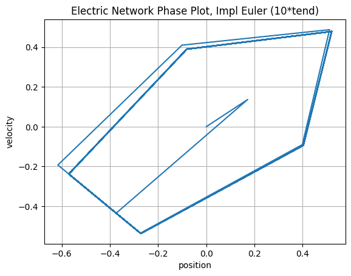
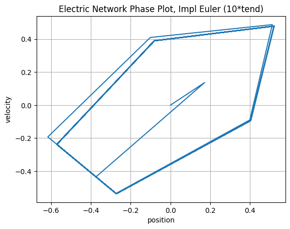
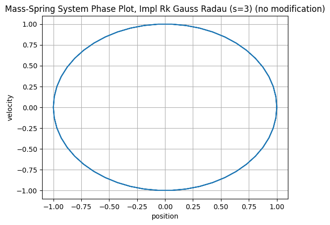
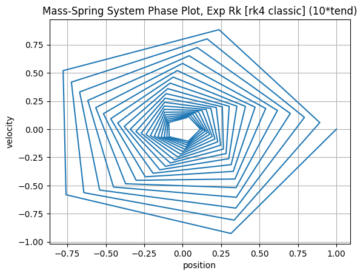
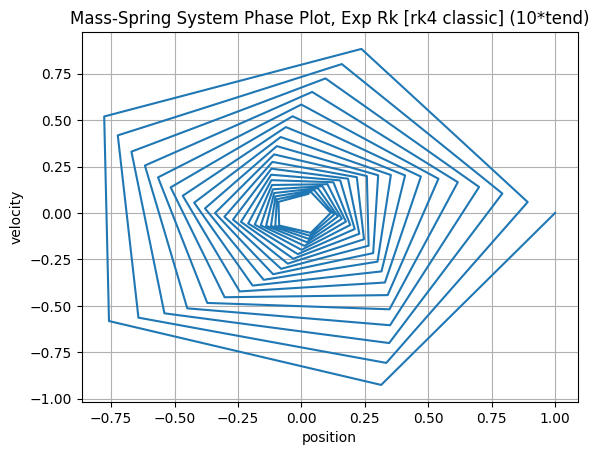

Exercise 2#
Electric Network#
The system is described by a second-order ODE (\(y_1'(t) = -\frac{1}{RC} y_1(t) + \frac{1}{RC} \cos(\omega t))\), converted into a 2D system where the state vector y = (position, velocity). For the electric circuit analogy, “position” represents the charge on the capacitor and “velocity” represents the current.
Comparison of Methods#
Explicit Euler (Unstable and Adds Energy)#
The Explicit Euler method is only conditionally stable and is unsuitable for purely oscillatory systems. Its stability region does not cover the imaginary axis, where the eigenvalues for this system lie.
Standard Time Step#
The phase plot shows a clear outward spiral, and the time evolution plot reveals a slowly but steadily increasing amplitude. The method continuously adds artificial energy to the system, causing it to diverge from the true solution.
Large Time Step (10 * tend)#
The instability becomes more visible. The solution is immediately thrown into a high-energy state. The phase plot is jagged, and the time evolution is non-physical. This shows a complete breakdown of the method.


Implicit Euler (Removes Energy)#
In direct contrast to its explicit counterpart, the Implicit Euler method is stable, but this stability comes at the cost of introducing significant numerical damping.
Standard Time Step#
The phase plot shows an inward spiral, and the time evolution plot shows the amplitude slowly decaying. The method artificially removes energy from the system, which is incorrect for a conservative system.
Large Time Step (10 * tend)#
The damping effect is more visible. The amplitude is immediately and severely dampened, settling into a low-energy oscillation that is a fraction of the true solution’s amplitude. While the method remains stable, it is inaccurate, as it has dissipated a significant portion of the system’s energy.


 

Crank-Nicolson (Preserves Energy)#
The Crank-Nicolson method shows better stability and accuracy for oscillatory problems, correctly capturing the conservative nature of the system.
Standard Time Step#
The phase plot shows a stable, closed loop, and the time evolution shows a constant amplitude. The method accurately preserves the system’s energy.
Large Time Step (10 * tend)#
Even with a much larger time step, the method remains stable and energy preserving. The amplitude of the oscillation does not grow or decay. The trajectory becomes more angular due to the coarse time step, but it remains on a stable, closed path. This shows its suitability simulations of oscillatory systems.


Autodiff#
To make the autodiff.hpp a (fully) functional Automatic Differentiation class operators and functions were added:
Operators:
operator* (T a, const AutoDiff<N,T>& b): scalar multiplication
operator/ (const AutoDiff<N,T>& a, const AutoDiff<N,T>& b): division using the quotient rule
operator- (const AutoDiff<N,T>& a, const AutoDiff<N,T>& b): subtraction
operator- (const AutoDiff<N, T> &a): unary negation of value and derivatives
operator== (const AutoDiff<N,T>& a, const AutoDiff<N,T>& b): compares both values and derivatives
Functions:
Basic trigonometric functions cos(x), tan(x): cos (const AutoDiff<N, T> &a), tan (const AutoDiff<N, T> &a)
Exponential \(e^x\): exp (const AutoDiff<N, T> &a)
Logarithmic log(x): log (const AutoDiff<N, T> &a)
Power \(a^x\), \(x^a\): pow (const AutoDiff<N, T> &a, T exp), pow (T a,const AutoDiff<N, T> &exp)
Squareroot \(\sqrt{x}\) as a wrapper of pow function: sqr (const AutoDiff<N, T>& a)
Legendre polynomials#
legendre_autodiff.cpp evaluates Legendre polynomials up to order 5 over the interval [-1, 1] and writes the results to a CSV file with columns x, P0, dP0/dx, P1, dP1/dx, …, P5, dP5/dx
plot_legendre.py reads this CSV and generates plots of the polynomials and their derivatives. Both the CSV and the plots are saved in _static/demos/Legendre.


Compilation:
g++ -std=c++20 -I./src _static/demos/legendre_autodiff.cpp -o _static/demos/legendre_autodiff
The pendulum class is implemented in nonlinfunc.hpp.
pendulum_demo.cpp evaluates the pendulum system and prints the function values and Jacobian to the terminal.
Compilation:
g++ -std=c++20 -I./src _static/demos/legendre_autodiff.cpp -o _static/demos/legendre_autodiff
Runge-Kutta (RK)#
The order of the RK method depends on the polynomial exactness of the quadrature rule used. We compare to quadrature rules:
Gauss–Radau
One endpoint is included (left or right)
\(s\) nodes \(\to\) polynomial exactness up to degree \(2s−2\)
RK method order = \(2s−1\)
Gauss–Legendre
No endpoints included
\(s\) nodes \(\to\) polynomial exactness up to degree \(2s−1\)
RK method order = 2s (optimal!)
Implicit 2-point Runge-Kutta#
The 2‑stage RK schemes extend the midpoint rule by adding a second quadrature node. Because Gauss–Legendre places both nodes strictly inside the interval, it achieves higher accuracy than Gauss–Radau, which fixes one node at the endpoint. The impact shows up most clearly for long simulations (third row): Gauss–Radau’s solution amplitude decays rapidly, while Gauss–Legendre preserves the oscillation almost perfectly. Both methods still exhibit a phase shift as the simulation lengthens.
Gauss-Radau quadrature#


Gauss-Legendre quadrature#


Implicit 3-point Runge-Kutta#
Adding an extra quadrature point for a total of \(s=3\) points notably improves accuracy of the RK method for both quadrature schemes. It effectively eliminates phase shift and reduces errors due to amplitude decay (although Gauss-Radau still experiences some decay).
Gauss-Radau quadrature#
{kind=link}


Gauss-Legendre quadrature#


Explicit Runge-Kutta#
Explicit RK steppers load their Butcher tableaux from folders that start with the prefix ExplicitRK. Each folder must contain a tableau.txt file. For instance, _static/demos/ExplicitRK_RK4Classic/tableau.txt stores the standard RK4 tableau and can be reused for any run.
Running test_ode:
cd build
./test_ode --rhs mass_spring --stepper exp_rk --tableau-folder ../_static/demos/ExplicitRK_RK4Classic
./test_ode --rhs mass_spring --stepper exp_rk --tableau-folder ../_static/demos/ExplicitRK_RK4Classic --n-factor 10
./test_ode --rhs mass_spring --stepper exp_rk --tableau-folder ../_static/demos/ExplicitRK_RK4Classic --t-end-factor 10
./test_ode --rhs mass_spring --stepper exp_rk --tableau-folder ../_static/demos/ExplicitRK_RK4Classic --n-factor 10 --t-end-factor 10
--tableau-folder accepts relative paths, so tab-completion works both from the repo root and from build/. The output files follow the pattern mass_spring_exp_rk_<folder_suffix>_<modifiers>.txt (e.g., mass_spring_exp_rk_rk4classic_nomod.txt).
Plotting explicit RK runs:
uv run _static/demos/plot_ode_results.py build/mass_spring_exp_rk_rk4classic_nomod.txt
uv run _static/demos/plot_ode_results.py build/mass_spring_exp_rk_rk4classic_10steps.txt
uv run _static/demos/plot_ode_results.py build/mass_spring_exp_rk_rk4classic_10tend.txt
uv run _static/demos/plot_ode_results.py build/mass_spring_exp_rk_rk4classic_10tend_10steps.txt
The plotting helper automatically writes the figures into _static/demos/ExplicitRK_RK4Classic/ and uses filenames of the form mass_spring_time_evolution_<modifiers>.png / mass_spring_phase_<modifiers>.png.
Only the physical modifiers (e.g., 10steps, 10tend) remain in the filename; the RK tableau is implied by the folder.
Classic \(RK_4\)#
The classical fourth-order Runge–Kutta scheme exhibits phase drift and amplitude damping comparable to the 2-point Gauss–Radau method. Despite using four stages, it achieves only second-order accuracy because two of those stages coincide with the interval endpoints.


 

{kind=link}